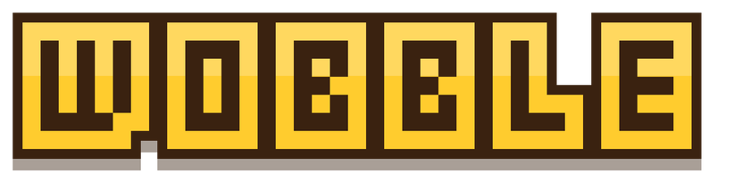
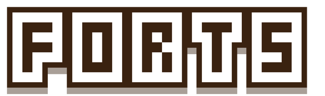
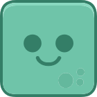
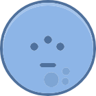
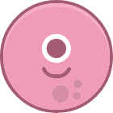
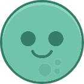
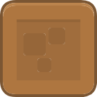
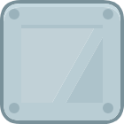
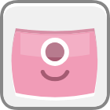

A physics game written in xTalk


Pull back and fling the round Bloops at the Grumps' wobbly forts of wood, glass, stone, metal and TNT. Fifteen forts in three lands, a boss at the end of each, and three stars to earn on every one.
- Touch: pull a finger back from anywhere, aim along the dots and let go
- Tap while a Bloop flies for its trick
- Mouse: drag back and let go; click in flight
- Space or Enter play, and the next fort
- P or Esc pause, R the fort again
- Turn the phone on its side for a bigger fort
How it plays The same rules on a phone, a tablet and a computer

Pull and let go
Pull the Bloop back in the launcher, aim along the dots and let go. Pop every Grump to bring the fort down.



Tap in flight
Zip, the blue Bloop, dashes. Trio splits in three, Thud drops straight down and Boom goes bang. The yellow one just flies.


Wood, glass, stone, metal
Every block cracks a little each time it is hit hard: glass first, metal hardly at all. And TNT goes bang.

Three lands, three bosses
The Meadow, the Dunes and Shroom Hollow, five forts each. The last of each land is a boss's, and the boss is tough.
Stars to earn
Clear a fort with Bloops to spare for up to three stars. Your stars and best scores are kept for your next visit.
Made with OXT-Beyond One stack, no web code
Written in xTalk
The whole game is one stack in xTalk Script: its screens, its forts and its rules, with its levels as lines of text. It is one of the Stack Player's samples, so it plays there too.
Real physics
Every block, Grump and Bloop is a body in Box2D, through the xTalk Suite's Box2Dxt extension, stepped sixty times a second by the stack's script.
Made for phones
The Mobile Web library gives it the whole screen on a phone, keeps it clear of the notch, and draws the world again to fit when the phone turns.